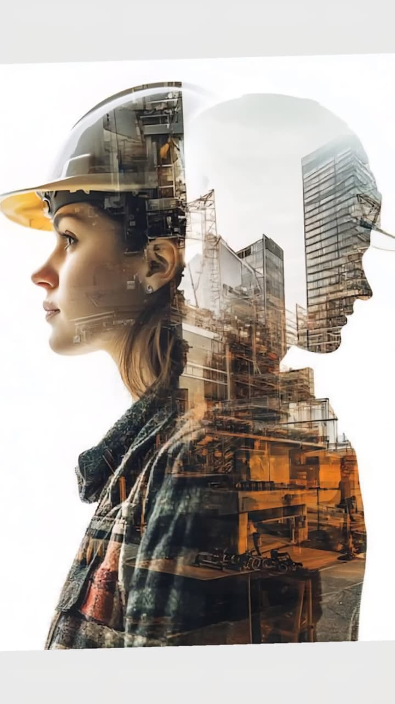

MIngeniería con visión. Obras con confianza.
Somos una empresa multidisciplinaria de ingeniería, arquitectura, construcción, consultoría, supervisión y topografía. Unimos talento, conocimiento técnico y tecnología para convertir ideas en soluciones concretas.
— Mayris Ingenieros Sicuani · Canchis · Cusco
- Integridad
Honestidad, ética y transparencia en cada actividad.
- Calidad
Excelencia en procesos y servicios.
- Trabajo en equipo
Colaboración entre especialidades.
- Innovación
Tecnología y métodos modernos.
Y también: responsabilidad · seguridad · compromiso.
Ingeniería Civil
Diseño, ejecución, supervisión y control de obras e infraestructura.
Arquitectura
Diseño y planificación funcional y estética de espacios.
Ing. Eléctrica
Instalaciones y sistemas eléctricos para edificaciones.
Ing. Sanitaria
Agua potable, desagüe, drenaje e instalaciones sanitarias.
Hacia dónde trabajamos.
- Servicios con altos estándares de calidad y eficiencia.
- Proyectos que respondan a las necesidades técnicas, funcionales y económicas de cada cliente.
- Precisión y confiabilidad en campo, gabinete, diseño, ejecución y supervisión.
- Relaciones sostenibles basadas en confianza, transparencia y cumplimiento.
Precisión en campo y en gabinete.
Equipos topográficos y software técnico para trabajar con precisión, eficiencia y confiabilidad.
- Mediciones y levantamientos topográficos.
- Replanteos de proyectos y obras.
- Control geométrico y nivelación.
- Planos y documentación técnica.
Transformamos ideas en proyectos y proyectos en desarrollo.
Ingeniería que proyecta. Construcción que transforma.
Ingeniería · Consultoría · Construcción · Topografía
Cada proyecto es una oportunidad para demostrar nuestra capacidad profesional y vocación de servicio. Trabajamos con responsabilidad, calidad, precisión y transparencia para construir relaciones de confianza y contribuir al progreso.